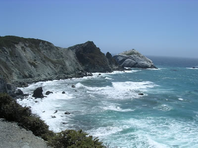

Hiking
Explore scenic 5-miles worth of hiking trails with breathtaking views, diverse wildlife, and unforgettable outdoor adventures for hikers of all skill levels.
Kayaking
Experience kayaking through beautiful waterways, wildlife habitats, and peaceful landscapes. Great for beginners, families, and adventure seekers!
Bird Watching
Explore peaceful bird watching spots and observe a variety of bird species in their natural habitats either alone or by guided tour. Perfect for nature and wildlife enthusiasts!


